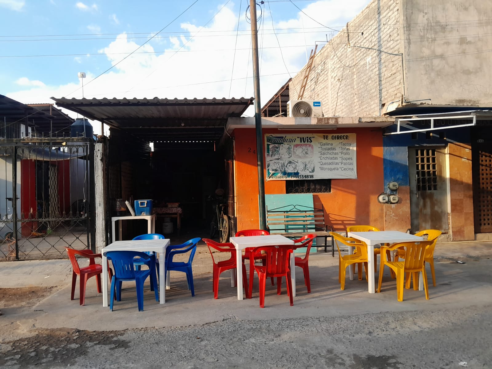

HISTORIA
Ivis tiene tres hijos y tenía muchas deudas. El dinero ya no le alcanzaba y cada día se le hacía más difícil sacar adelante la casa y en lugar de estar preocupándose sin hacer nada, un día se le ocurrió la idea de vender comida ya que sabe cocinar muy bien. Un día sacó una mesa, unas sillas y unas servilletas y empezó a vender cena ahí, en la cochera de su casa, puso un comal y preparó tacos, enchiladas y también morisqueta. No sabía si iba a funcionar, pero necesitaba intentarlo. Al principio casi nadie se acercaba, solo uno que otro vecino y sus familiares, pero poco a poco probaron su comida, les gustó y regresaban pero con más gente y así la gente nueva que iban a probar la cena recomendaban a otras personas que fueran ahí. Con el paso del tiempo, su cochera, empezó a llenarse cada noche. Ya había más movimiento, más pedidos y gente esperando su turno. Sin darse cuenta, su cenaduría se hizo conocida en la colonia y en otras colonias que están cerca. Gracias a eso, poco a poco fue pagando sus deudas y mejorando la situación de su familia y así, con una mesa sencilla en su cochera logró salir adelante.
¿QUÉ OFRECE AL PÚBLICO?
Ofrecemos gallina, tostadas, salchichas, quesadillas, morisqueta, tacos, pollo, sopes, patitas, cecina, aguas de sabor, etc.
